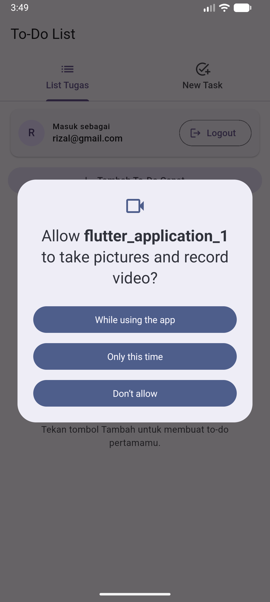
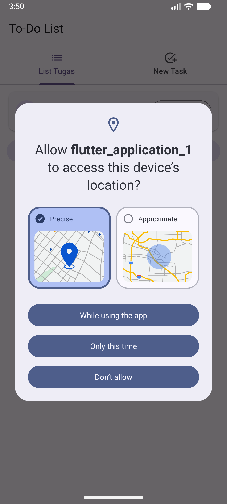
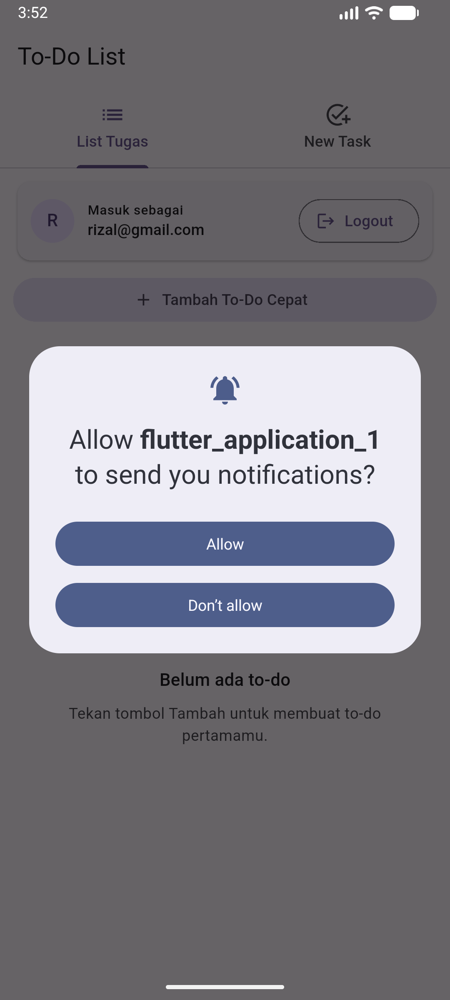
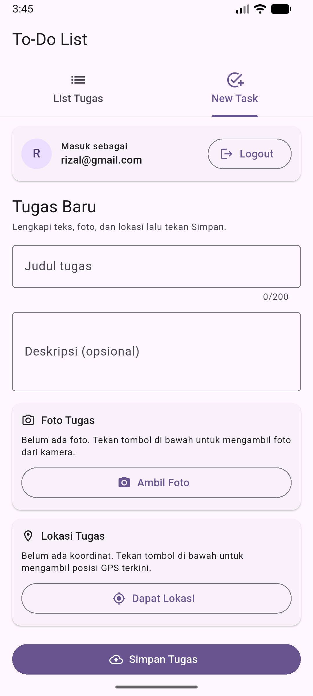
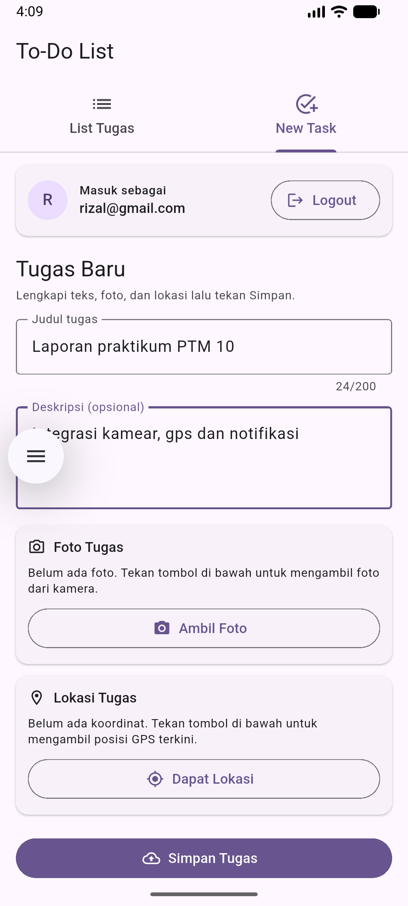
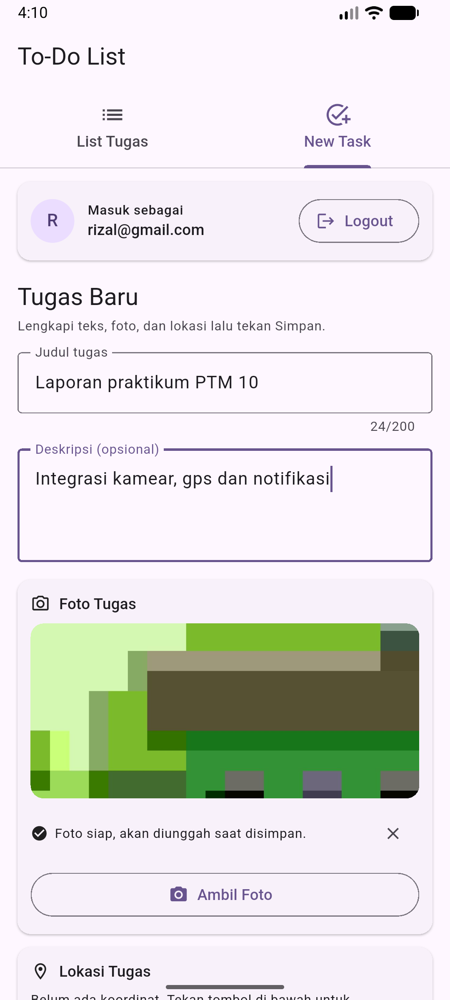
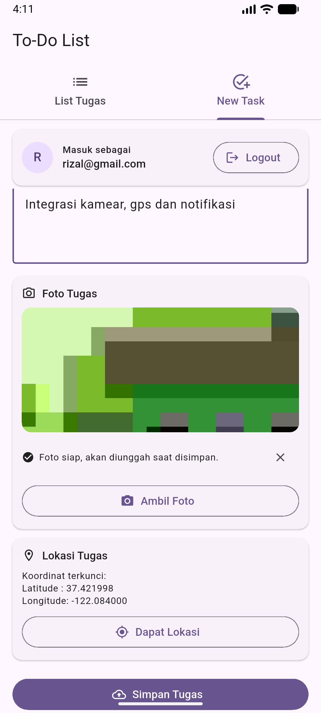
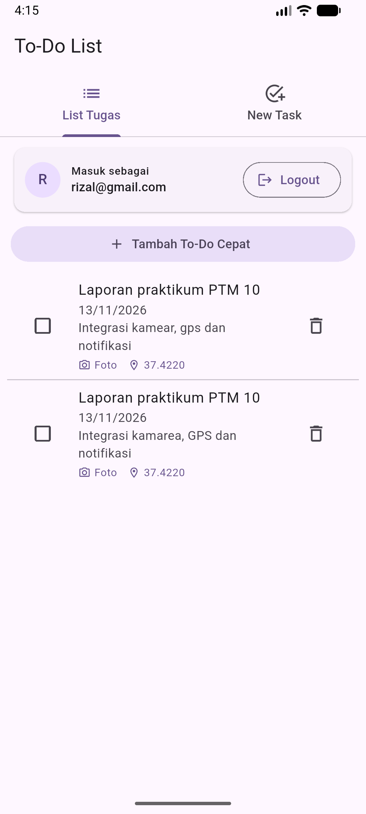
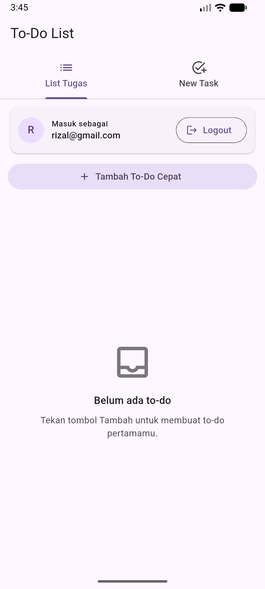
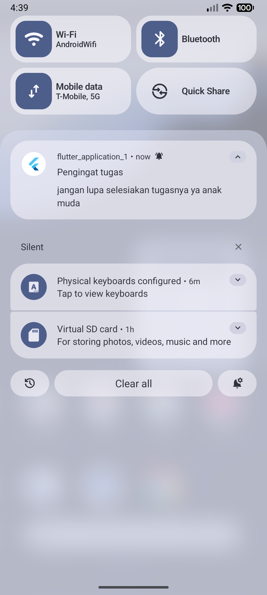

| Package | Versi | Fungsi |
|---|---|---|
| image_picker | 1.2.4 | Membuka aplikasi kamera sistem dan mengambil file hasil jepretan |
| geolocator | 14.1.2 | Membaca posisi GPS perangkat (latitude/longitude) |
| permission_handler | 13.0.2 | Meminta izin runtime: kamera, lokasi presisi, POST_NOTIFICATIONS |
| firebase_core | 5.1.0 | Inisialisasi Firebase |
| firebase_messaging | 17.0.1 | Push notification FCM (register token, listener pesan) |
| provider | 6.1.5+1 | State management draft tugas (ChangeNotifier + Consumer) |
Konfigurasi backend Supabase (migration supabase/migration_ptm10.sql):
todos: description, photo_url, latitude, longitude.todo-photos + 4 policy RLS (select/insert/update/delete) — pengguna hanya boleh mengakses folder bernama user_id-nya sendiri.fcm_tokens (user_id, token, updated_at) dengan RLS per-user untuk menyimpan registration ID FCM.Konfigurasi Firebase (Android): project todo-flutter-ptm10, aplikasi dengan package name com.example.flutter_application_1, file google-services.json di android/app/, plugin Gradle com.google.gms.google-services 4.4.2, serta meta-data firebase_messaging_installation_id_enabled=true pada AndroidManifest (wajib untuk API register() firebase_messaging 17). compileSdk dinaikkan ke 37 sesuai syarat permission_handler_android.
lib/screens/home_screen.dart — HomeScreen menggunakan DefaultTabController dengan dua tab; TodoScreen direfactor menjadi TodoListTab (tanpa Scaffold) agar dapat disematkan di TabBarView. Setelah tugas berhasil disimpan, NewTaskScreen memanggil DefaultTabController.maybeOf(context)?.animateTo(0) untuk berpindah ke tab daftar.
DefaultTabController(
length: 2,
child: Scaffold(
appBar: AppBar(
title: const Text('To-Do List'),
bottom: const TabBar(tabs: [
Tab(icon: Icon(Icons.list), text: 'List Tugas'),
Tab(icon: Icon(Icons.task_alt), text: 'New Task'),
]),
),
body: const TabBarView(children: [TodoListTab(), NewTaskScreen()]),
),
)
lib/services/native_service.dart memusatkan seluruh akses hardware melalui plugin:
// Izin runtime (permission_handler)
final status = await Permission.camera.request(); // juga locationWhenInUse, notifications
// Kamera (image_picker)
final photo = await ImagePicker().pickImage(
source: ImageSource.camera, maxWidth: 1280, imageQuality: 80);
// GPS (geolocator 14)
final position = await Geolocator.getCurrentPosition(
locationSettings: LocationSettings(accuracy: LocationAccuracy.high));
// Upload foto (Supabase Storage)
final path = '${user.id}/${DateTime.now().millisecondsSinceEpoch}.jpg';
await client.storage.from('todo-photos').uploadBinary(path, bytes,
fileOptions: const FileOptions(contentType: 'image/jpeg'));
final url = client.storage.from('todo-photos').getPublicUrl(path);
// FCM (firebase_messaging 17)
await messaging.requestPermission();
messaging.onRegistered.listen(saveMessagingToken); // token -> tabel fcm_tokens
await messaging.register();
FirebaseMessaging.onMessage.listen(onForegroundMessage);
// Tanpa google-services.json: try/catch -> "Firebase not configured, FCM disabled"
lib/screens/new_task_screen.dart + lib/providers/task_draft_provider.dart. Form dibungkus Consumer<TaskDraftProvider>; state draft menyimpan photoPath, latitude, longitude. Tombol Ambil Foto memanggil draft.capturePhoto() lalu menampilkan preview Image.file; tombol Dapat Lokasi memanggil draft.fetchLocation() dan menampilkan koordinat terkunci; tombol Simpan Tugas memanggil draft.submit() yang mengunggah foto ke Storage, menyisipkan baris ke todos dengan null-aware element ('photo_url': ?photoUrl, 'latitude': ?_latitude), me-reset draft, dan berpindah ke tab daftar. Kegagalan menghasilkan SnackBar pesan error.
Ketiga izin diminta saat interaksi pertama dengan fitur terkait. Untuk mengambil bukti, izin di-revoke lewat adb (adb shell pm revoke) lalu aplikasi dijalankan ulang sehingga dialog muncul kembali. Setelah tombol Allow ditekan, izin tercatat granted oleh sistem — dibuktikan dengan kelanjutan alur fitur berjalan normal (foto terjepret, koordinat terkunci, push diterima).
 Dialog izin CAMERA |
 Dialog izin lokasi |
 Dialog izin POST_NOTIFICATIONS |
| Permission | Momen permintaan | Bukti berhasil diberikan |
|---|---|---|
| CAMERA | Saat tombol Ambil Foto pertama kali ditekan | Aplikasi kamera sistem terbuka (SS 7) dan preview foto tampil di form (SS 8) |
| ACCESS_FINE_LOCATION | Saat tombol Dapat Lokasi ditekan (dialog Presise/Approximate) | Koordinat terkunci 37.421998, -122.084000 (SS 9) |
| POST_NOTIFICATIONS | Saat inisialisasi FCM setelah login | Push notification diterima di status bar (SS 12) |
 |
SS 1 — Tab New Task. Navigasi TabBar dengan dua tab (List Tugas / New Task). Form memuat judul, deskripsi, kartu Foto Tugas, kartu Lokasi Tugas, dan tombol Simpan Tugas. Header akun (rizal@gmail.com + logout) ada di HomeScreen. |
 |
SS 3 — Form terisi. Judul "Laporan praktikum PTM 10" dan deskripsi diisi; counter 24/200 menandakan TextFormField dengan maxLength aktif. |
SS 7 — Aplikasi kamera. image_picker mengirim intent android.media.action.IMAGE_CAPTURE; OS membuka aplikasi kamera sistem (virtual scene emulator). Pengguna menekan shutter lalu konfirmasi ✓. | |
 |
SS 8 — Preview foto. Hasil jepretan dikembalikan ke Dart sebagai path file dan ditampilkan dengan Image.file; status "Foto siap, akan diunggah saat disimpan." |
 |
SS 9 — Koordinat GPS. geolocator mengembalikan Position; form menampilkan "Koordinat terkunci: Latitude 37.421998, Longitude -122.084000". |
 |
SS 10 — Hasil tersimpan. Setelah Simpan Tugas, baris baru tampil di tab List Tugas dengan badge Foto (photo_url tidak null) dan badge 37.4220 (latitude tidak null) — bukti data tersimpan di Supabase dan dikembalikan ke aplikasi. |
 |
SS 2 — Tab List Tugas (awal). Kondisi awal daftar tugas kosong; inisialisasi Supabase & Firebase berjalan, izin notifikasi diminta setelah login. |
 |
SS 12 — Notifikasi diterima. Aplikasi di background; pesan uji dari Firebase Cloud Messaging (kirim ke token perangkat) diterima dan OS menampilkan notifikasi "Pengingat tugas" di notification tray — bukti FCM berfungsi penuh. |
Logcat pendukung: Firebase initialized (FCM ready), FCM registration token: eTW5GOPaRgmIlSl4pGvdpJ (otomatis ter-upsert ke tabel fcm_tokens), FCM messaging initialized. Saat aplikasi di foreground, pesan yang sama ditampilkan sebagai SnackBar in-app oleh listener FirebaseMessaging.onMessage (durasi 6 detik).
Pengguna mengisi judul dan deskripsi pada tab New Task, lalu menekan "Ambil Foto". Aksi ini memanggil TaskDraftProvider.capturePhoto() yang menjalankan NativeService.capturePhoto(). Plugin permission_handler memeriksa izin kamera; bila belum diberikan, Flutter menampilkan dialog izin Android dan hasilnya dikembalikan ke aplikasi. Setelah izin disetujui, image_picker mengirim intent IMAGE_CAPTURE ke OS, OS membuka aplikasi kamera sistem, pengguna menekan shutter dan mengonfirmasi, lalu OS menyalin file JPEG ke cache aplikasi sebelum path-nya dikembalikan ke Dart untuk ditampilkan sebagai preview. Tombol "Dapat Lokasi" memanggil geolocator yang meminta izin layanan lokasi lalu membaca posisi dari OS (37.421998, -122.084000). Saat "Simpan Tugas" ditekan, provider mengunggah bytes foto ke bucket todo-photos Supabase Storage pada folder user_id/, memperoleh URL publiknya, lalu menyisipkan baris (judul, deskripsi, photo_url, latitude, longitude) ke tabel todos. Supabase menyimpan data, aplikasi berpindah ke tab List Tugas, dan baris baru tampil dengan badge Foto dan koordinat GPS. Pada sisi notifikasi, token FCM yang diterima dari Google Play Services ter-upsert ke tabel fcm_tokens; pesan uji dari Firebase Console dikirim ke token tersebut dan ditampilkan OS di status bar saat aplikasi berada di background.